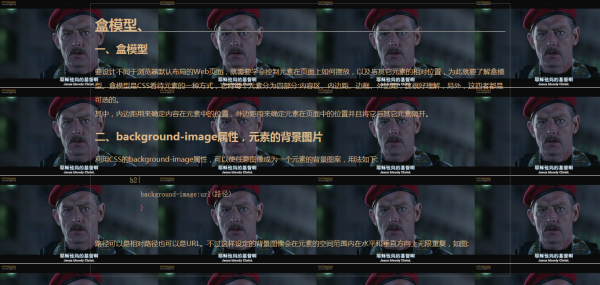

要设计不同于浏览器默认布局的Web页面，就需要学会控制元素在页面上如何摆放，以及与其它元素的相对位置，为此就要了解盒模型。盒模型是CSS看待元素的
一种方式，它将每个元素分为四部分:内容区、内边距、边框、外边距，这很好理解，另外，这四者都是可选的。
其中，内边距用来确定内容在元素中的位置，外边距用来在元素和其它元素之间创建空间。
内边距和外边距有一个区别是:元素的背景会延伸到内边距下方，但不会延伸到外边距，也就是说，背景
不能突破边框。
利用CSS的background-image属性，可以使任意图像成为一个元素的背景图案，用法如下:
h2{ background-image:url(路径); }
路径可以是相对路径也可以是完整的URL。不过这样设定的背景图像会在元素的空间范围内在水平和垂直方向上无限重复，如图:

重复是默认的，这需要background-repeat属性的no-repeat值来阻止，另外的，浏览器还会默认的把背景图像放在元素的左上角，要想改变位置，就需要
另一个属性——background-position属性。
浏览器默认的方式称为“平铺”，即反复重复来填满整个元素空间，background-repeat属性用来控制这种行为，它有五个参数:
这个属性用来指定图像在元素中的位置，有三种方式:像素、百分数、关键字。
可以这样写内边距:h1{ padding:10px 10px 10px 10px; }
它们的定义的方向依次是上、右、下、左，即从上方开始顺时针顺序。它们可以被分别设置为不同的量，但如果它们都相同，也可以只写一个量。
外边距与内边距如出一辙，只是属性名不同:h1{ margin:15% 15% 15% 15%; },
它们都可以使用百分数或像素。
边框有三个要设定的参数，依次是粗细、样式、颜色。目前有八种可用的样式:
id属性不仅可以为一个链接定位页面上的指定位置，它还可以为CSS定位一个元素。具体的做法很简单，首先用id属性标记一个元素，然后:
#元素的id名{ 属性:样式; }
这样就可以为一个元素指定样式。
注:类名必须以字母开头，可以包含数字和_，id名可以以字母和数字开头，也可以包含_（英文状态下，Shift+-）。
可以使用多个link元素在一个页面中链接多个外部样式表，这些样式表的顺序很重要，它们的优先级从上到下递增，例如最上方和最下方的样式表都有 font-family这个属性，那么就会使用最下方这个样式表的属性值，这通常被称为“覆盖”。
在电脑上看起来井井有条的页面如果移到手机上可能就会显得乱七八糟，为了解决这个问题，可以令浏览器事先判断设备的类型然后再决定使用哪种CSS规则，使
用link元素的media属性或CSS的@media规则都可以达到这个
目的，它们是两种方式，一个是选择使用哪个外部样式表，一个是直接更改CSS文件。
media属性:<link href="路径" rel="stylesheet" media="条件">
“条件”即判断条件，例如screen and (max-device-width:500px),指的是使用屏幕且屏幕宽度不大于500px的设备。这样的条件还有很多,例如:print代
表打印机，min-device-width代表的是屏幕宽度不小于多少多少的设备，具体可以在CSS3媒体查询规范中进一步了解。这样，就可以根据不同的设备来应用不
同的样式表。
@media规则:@media 条件 { 选择器{属性:样式;} ...... }
@media规则是可以直接写在CSS中的，令CSS可以根据不同设备应用不同规则，这些规则都写在一个文件中，而不需要再更改link元素，所有设备可以只使用一
个CSS文件。